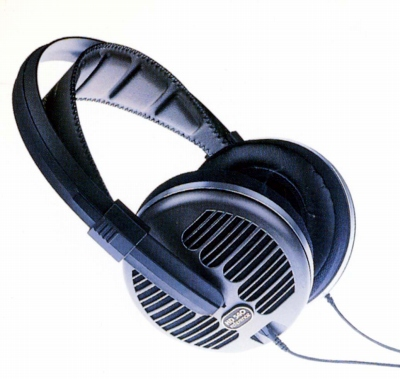
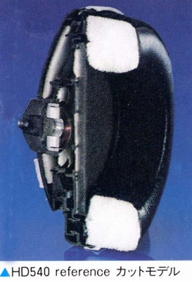
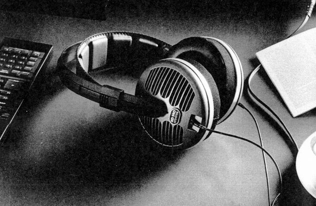

HD-540reference


■価格 29,800円
■型式 ダイナミック型オープンエアタイプ
■振動板 40mmホリカーボネイト ネオジウム
■インピーダンス 600Ω
■再生周波数帯域 16-25,000Hz
■許容入力 200mW
■感度 94dB
■コード 3m
■重量 250g（コード含まず）
■発売 1986年9月
■販売終了 1991年夏頃
■備考
後継機のHD-540reference�Uとはイヤパッドの構造が違う。
オリジナルモデルは耳にあたる部分が皮膜状で、側面はジャージ風だった。
540reference�UはHD-560ovation風のベルベット調のものになった。
